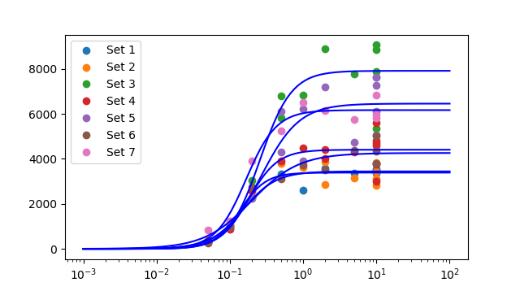
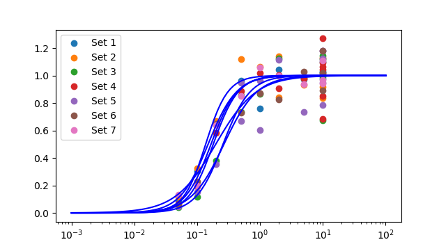
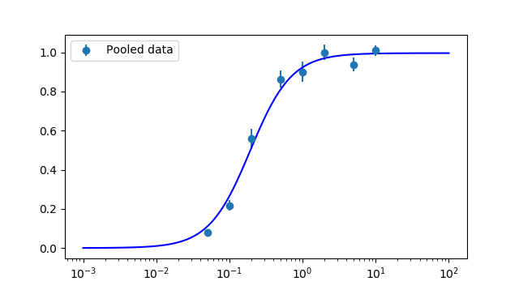
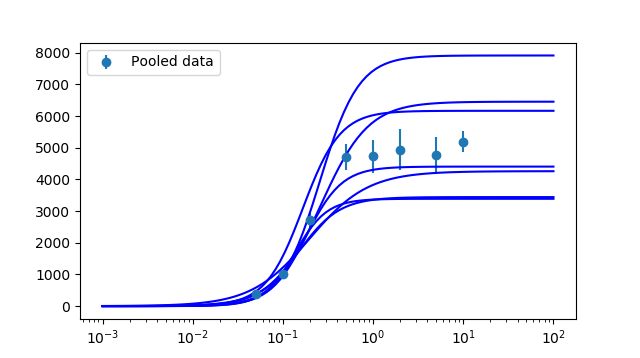

Date and time of analysis: 2018/11/14 11:21:16
Machine: Pharm109; System: win32
Number of datasets loaded: 7
Set 1
| X | Y | s(Y) | weight |
|---|---|---|---|
| 0.05 | 319.964 | 0 | 1 |
| 0.1 | 1052.76 | 0 | 1 |
| 0.2 | 2254.67 | 0 | 1 |
| 0.5 | 3319.22 | 0 | 1 |
| 1 | 2616.93 | 0 | 1 |
| 2 | 3593.12 | 0 | 1 |
| 5 | 3352.19 | 0 | 1 |
| 10 | 3782.98 | 0 | 1 |
| 10 | 3515.37 | 0 | 1 |
| 10 | 3536.82 | 0 | 1 |
| 10 | 3366.5 | 0 | 1 |
Set 2
| X | Y | s(Y) | weight |
|---|---|---|---|
| 0.05 | 397.973 | 0 | 1 |
| 0.1 | 1103.26 | 0 | 1 |
| 0.2 | 2264.53 | 0 | 1 |
| 0.5 | 3784.67 | 0 | 1 |
| 1 | 3599.15 | 0 | 1 |
| 2 | 3859.39 | 0 | 1 |
| 2 | 2848.39 | 0 | 1 |
| 5 | 3162.45 | 0 | 1 |
| 10 | 3832.87 | 0 | 1 |
| 10 | 3423.72 | 0 | 1 |
| 10 | 3100.23 | 0 | 1 |
| 10 | 2826.72 | 0 | 1 |
Set 3
| X | Y | s(Y) | weight |
|---|---|---|---|
| 0.05 | 306.079 | 0 | 1 |
| 0.1 | 919.307 | 0 | 1 |
| 0.2 | 3028.15 | 0 | 1 |
| 0.5 | 5813.87 | 0 | 1 |
| 0.5 | 6791.47 | 0 | 1 |
| 1 | 6837.33 | 0 | 1 |
| 2 | 8897.22 | 0 | 1 |
| 5 | 7781.85 | 0 | 1 |
| 10 | 5340.77 | 0 | 1 |
| 10 | 7864.58 | 0 | 1 |
| 10 | 8860.95 | 0 | 1 |
| 10 | 9055.28 | 0 | 1 |
Set 4
| X | Y | s(Y) | weight |
|---|---|---|---|
| 0.05 | 282.312 | 0 | 1 |
| 0.1 | 855.595 | 0 | 1 |
| 0.2 | 2562.56 | 0 | 1 |
| 0.5 | 3911.4 | 0 | 1 |
| 1 | 4492.65 | 0 | 1 |
| 2 | 4426.95 | 0 | 1 |
| 2 | 3999 | 0 | 1 |
| 5 | 4307.51 | 0 | 1 |
| 10 | 5588.11 | 0 | 1 |
| 10 | 3752.53 | 0 | 1 |
| 10 | 3003.99 | 0 | 1 |
| 10 | 4824.4 | 0 | 1 |
| 10 | 4606.37 | 0 | 1 |
| 10 | 4689.06 | 0 | 1 |
Set 5
| X | Y | s(Y) | weight |
|---|---|---|---|
| 0.05 | 296.948 | 0 | 1 |
| 0.1 | 977.019 | 0 | 1 |
| 0.2 | 2275.37 | 0 | 1 |
| 0.5 | 4314.2 | 0 | 1 |
| 0.5 | 6128.02 | 0 | 1 |
| 1 | 3899.71 | 0 | 1 |
| 1 | 6217.41 | 0 | 1 |
| 2 | 7183.85 | 0 | 1 |
| 5 | 4733.49 | 0 | 1 |
| 10 | 6116.6 | 0 | 1 |
| 10 | 5075.93 | 0 | 1 |
| 10 | 7630.73 | 0 | 1 |
| 10 | 7622.14 | 0 | 1 |
| 10 | 7260.46 | 0 | 1 |
Set 6
| X | Y | s(Y) | weight |
|---|---|---|---|
| 0.05 | 257.781 | 0 | 1 |
| 0.1 | 980.898 | 0 | 1 |
| 0.2 | 2751.72 | 0 | 1 |
| 0.5 | 3103.99 | 0 | 1 |
| 1 | 3712.55 | 0 | 1 |
| 2 | 3516.46 | 0 | 1 |
| 5 | 4374.71 | 0 | 1 |
| 10 | 3803.67 | 0 | 1 |
| 10 | 4328.67 | 0 | 1 |
| 10 | 5021.01 | 0 | 1 |
Set 7
| X | Y | s(Y) | weight |
|---|---|---|---|
| 0.05 | 825.581 | 0 | 1 |
| 0.1 | 1235.18 | 0 | 1 |
| 0.2 | 3923.25 | 0 | 1 |
| 0.5 | 5244.38 | 0 | 1 |
| 1 | 6523.26 | 0 | 1 |
| 2 | 6159.81 | 0 | 1 |
| 5 | 5764.82 | 0 | 1 |
| 10 | 6834.3 | 0 | 1 |
| 10 | 5819.93 | 0 | 1 |
| 10 | 5970.89 | 0 | 1 |
Number of point fitted = 11
Number of parameters estimated = 3
Degrees of freedom = 8
Residual error SD = 308.702 (variance = 95296.762)
Parameter 1: Ymin = 0 (fixed)
Parameter 2: Ymax = 3441.67 Approx SD = 126.85 CV = 3.7
Parameter 3: EC50 = 0.149397 Approx SD = 0.0227029 CV = 15.2
Parameter 4: nH = 1.92294 Approx SD = 0.618452 CV = 32.2
Minimum SSD = 762374.093;
Max log-likelihood = -76.913
Correlation matrix = [!!!! PRINTOUT OF CORRELATION MATRIX NOT IMPLEMENTED YET. SORRY.
LIKELIHOOD INTERVALS
2.66-unit Likelihood Intervals (equivalent SD for Gaussian- 2.31)
Lmax= -76.913; Lcrit= -79.5718
Parameter 1: Ymin = 0 (fixed)
Parameter 2: Ymax = 3441.67 LOWER = 3172.01 UPPER = 3761.61
Parameter 3: EC50 = 0.149397 LOWER = 0.108292 UPPER = 0.223018
Parameter 4: nH = 1.92294 LOWER = 0.981462 UPPER = 3.98418
Number of point fitted = 12
Number of parameters estimated = 3
Degrees of freedom = 9
Residual error SD = 414.383 (variance = 171713.353)
Parameter 1: Ymin = 0 (fixed)
Parameter 2: Ymax = 3387.74 Approx SD = 141.957 CV = 4.2
Parameter 3: EC50 = 0.136644 Approx SD = 0.0233678 CV = 17.1
Parameter 4: nH = 2.46173 Approx SD = 0.775219 CV = 31.5
Minimum SSD = 1545420.174;
Max log-likelihood = -87.623
Correlation matrix = [!!!! PRINTOUT OF CORRELATION MATRIX NOT IMPLEMENTED YET. SORRY.
LIKELIHOOD INTERVALS
2.56-unit Likelihood Intervals (equivalent SD for Gaussian- 2.26)
Lmax= -87.6227; Lcrit= -90.181
Parameter 1: Ymin = 0 (fixed)
Parameter 2: Ymax = 3387.74 LOWER = 3075.41 UPPER = 3698.18
Parameter 3: EC50 = 0.136644 LOWER = 0.0918387 UPPER = 0.196522
Parameter 4: nH = 2.46173 LOWER = 1.28014 UPPER = 5.68113
Number of point fitted = 12
Number of parameters estimated = 3
Degrees of freedom = 9
Residual error SD = 1100.850 (variance = 1211870.977)
Parameter 1: Ymin = 0 (fixed)
Parameter 2: Ymax = 7912.45 Approx SD = 456.576 CV = 5.8
Parameter 3: EC50 = 0.257835 Approx SD = 0.0554519 CV = 21.5
Parameter 4: nH = 2.01695 Approx SD = 0.66989 CV = 33.2
Minimum SSD = 10906838.797;
Max log-likelihood = -99.347
Correlation matrix = [!!!! PRINTOUT OF CORRELATION MATRIX NOT IMPLEMENTED YET. SORRY.
WARNING: SOME PARAMETERS POORLY DEFINED (CV > 33%); try different guesses
LIKELIHOOD INTERVALS
2.56-unit Likelihood Intervals (equivalent SD for Gaussian- 2.26)
Lmax= -99.3472; Lcrit= -101.906
Parameter 1: Ymin = 0 (fixed)
Parameter 2: Ymax = 7912.45 LOWER = 6940.19 UPPER = 8966.4
Parameter 3: EC50 = 0.257835 LOWER = 0.157391 UPPER = 0.403601
Parameter 4: nH = 2.01695 LOWER = 1.00478 UPPER limit not found
Number of point fitted = 14
Number of parameters estimated = 3
Degrees of freedom = 11
Residual error SD = 625.655 (variance = 391443.661)
Parameter 1: Ymin = 0 (fixed)
Parameter 2: Ymax = 4404.3 Approx SD = 205.697 CV = 4.7
Parameter 3: EC50 = 0.180394 Approx SD = 0.0393652 CV = 21.8
Parameter 4: nH = 2.18635 Approx SD = 0.966372 CV = 44.2
Minimum SSD = 4305880.268;
Max log-likelihood = -108.320
Correlation matrix = [!!!! PRINTOUT OF CORRELATION MATRIX NOT IMPLEMENTED YET. SORRY.
WARNING: SOME PARAMETERS POORLY DEFINED (CV > 33%); try different guesses
LIKELIHOOD INTERVALS
2.42-unit Likelihood Intervals (equivalent SD for Gaussian- 2.2)
Lmax= -108.32; Lcrit= -110.742
Parameter 1: Ymin = 0 (fixed)
Parameter 2: Ymax = 4404.3 LOWER = 3948.02 UPPER = 4837.58
Parameter 3: EC50 = 0.180394 LOWER = 0.112704 UPPER = 0.293774
Parameter 4: nH = 2.18635 LOWER = 0.981608 UPPER limit not found
Number of point fitted = 14
Number of parameters estimated = 3
Degrees of freedom = 11
Residual error SD = 1169.977 (variance = 1368845.857)
Parameter 1: Ymin = 0 (fixed)
Parameter 2: Ymax = 6453.84 Approx SD = 494.639 CV = 7.7
Parameter 3: EC50 = 0.266907 Approx SD = 0.0802386 CV = 30.1
Parameter 4: nH = 1.661 Approx SD = 0.747409 CV = 45.0
Minimum SSD = 15057304.431;
Max log-likelihood = -117.083
Correlation matrix = [!!!! PRINTOUT OF CORRELATION MATRIX NOT IMPLEMENTED YET. SORRY.
WARNING: SOME PARAMETERS POORLY DEFINED (CV > 33%); try different guesses
LIKELIHOOD INTERVALS
2.42-unit Likelihood Intervals (equivalent SD for Gaussian- 2.2)
Lmax= -117.083; Lcrit= -119.506
Parameter 1: Ymin = 0 (fixed)
Parameter 2: Ymax = 6453.84 LOWER = 5484.22 UPPER = 8091.14
Parameter 3: EC50 = 0.266907 LOWER = 0.133763 UPPER = 0.573896
Parameter 4: nH = 1.661 LOWER = 0.607138 UPPER limit not found
Number of point fitted = 10
Number of parameters estimated = 3
Degrees of freedom = 7
Residual error SD = 497.856 (variance = 247860.675)
Parameter 1: Ymin = 0 (fixed)
Parameter 2: Ymax = 4259.41 Approx SD = 301.079 CV = 7.1
Parameter 3: EC50 = 0.197539 Approx SD = 0.0601623 CV = 30.5
Parameter 4: nH = 1.34337 Approx SD = 0.527766 CV = 39.3
Minimum SSD = 1735024.726;
Max log-likelihood = -74.509
Correlation matrix = [!!!! PRINTOUT OF CORRELATION MATRIX NOT IMPLEMENTED YET. SORRY.
WARNING: SOME PARAMETERS POORLY DEFINED (CV > 33%); try different guesses
LIKELIHOOD INTERVALS
2.8-unit Likelihood Intervals (equivalent SD for Gaussian- 2.37)
Lmax= -74.5091; Lcrit= -77.3057
Parameter 1: Ymin = 0 (fixed)
Parameter 2: Ymax = 4259.41 LOWER = 3665.57 UPPER = 5552.79
Parameter 3: EC50 = 0.197539 LOWER = 0.110001 UPPER = 0.597712
Parameter 4: nH = 1.34337 LOWER = 0.543767 UPPER = 5.29265
Number of point fitted = 10
Number of parameters estimated = 3
Degrees of freedom = 7
Residual error SD = 456.347 (variance = 208252.807)
Parameter 1: Ymin = 0 (fixed)
Parameter 2: Ymax = 6165.88 Approx SD = 195.1 CV = 3.2
Parameter 3: EC50 = 0.166135 Approx SD = 0.019491 CV = 11.7
Parameter 4: nH = 2.09977 Approx SD = 0.509792 CV = 24.3
Minimum SSD = 1457769.652;
Max log-likelihood = -73.639
Correlation matrix = [!!!! PRINTOUT OF CORRELATION MATRIX NOT IMPLEMENTED YET. SORRY.
LIKELIHOOD INTERVALS
2.8-unit Likelihood Intervals (equivalent SD for Gaussian- 2.37)
Lmax= -73.6386; Lcrit= -76.4352
Parameter 1: Ymin = 0 (fixed)
Parameter 2: Ymax = 6165.88 LOWER = 5729.7 UPPER = 6629.99
Parameter 3: EC50 = 0.166135 LOWER = 0.127691 UPPER = 0.221504
Parameter 4: nH = 2.09977 LOWER = 1.28266 UPPER = 4.172
Average of estimates of 7 sets (mean +/- sdm):
Parameter 1: Ymin = 0 +/- 0
(all: 0.0 0.0 0.0 0.0 0.0 0.0 0.0
Parameter 2: Ymax = 5146.47 +/- 601.634
(all: 3441.669046433504 3387.739284470006 7912.449231528109 4404.296703638187 6453.8395502568055 4259.413770376815 6165.878594838809
Parameter 3: EC50 = 0.19355 +/- 0.017867
(all: 0.14939694348830038 0.13664416772339133 0.2578352002368462 0.18039379404716216 0.26690682849930725 0.19753895690280643 0.16613481517730766
Parameter 4: nH = 1.95602 +/- 0.127506
(all: 1.9229438636285872 2.4617252188983745 2.016951445022859 2.1863451244789474 1.6609962721703135 1.3433742995338402 2.099773427863998


Number of point fitted = 83
Number of parameters estimated = 3
Degrees of freedom = 80
Residual error SD = 0.130 (variance = 0.017)
Parameter 1: Ymin = 0 (fixed)
Parameter 2: Ymax = 0.9957 Approx SD = 0.0204243 CV = 2.1
Parameter 3: EC50 = 0.192655 Approx SD = 0.017653 CV = 9.2
Parameter 4: nH = 1.54299 Approx SD = 0.179513 CV = 11.6
Minimum SSD = 1.359;
Max log-likelihood = 52.867
Correlation matrix = [!!!! PRINTOUT OF CORRELATION MATRIX NOT IMPLEMENTED YET. SORRY.
LIKELIHOOD INTERVALS
1.99-unit Likelihood Intervals (equivalent SD for Gaussian- 1.99)
Lmax= 52.8672; Lcrit= 50.8805
Parameter 1: Ymin = 0 (fixed)
Parameter 2: Ymax = 0.9957 LOWER = 0.943537 UPPER = 1.04421
Parameter 3: EC50 = 0.192655 LOWER = 0.149081 UPPER = 0.228908
Parameter 4: nH = 1.54299 LOWER = 1.32913 UPPER = 2.8534


Number of point fitted = 83
Number of parameters estimated = 3
Degrees of freedom = 80
Residual error SD = 0.130 (variance = 0.017)
Parameter 1: Ymin = 0 (fixed)
Parameter 2: Ymax = 0.9957 Approx SD = 0.0204243 CV = 2.1
Parameter 3: EC50 = 0.192655 Approx SD = 0.017653 CV = 9.2
Parameter 4: nH = 1.54299 Approx SD = 0.179513 CV = 11.6
Minimum SSD = 1.359;
Max log-likelihood = 52.867
Correlation matrix = [!!!! PRINTOUT OF CORRELATION MATRIX NOT IMPLEMENTED YET. SORRY.
LIKELIHOOD INTERVALS
1.99-unit Likelihood Intervals (equivalent SD for Gaussian- 1.99)
Lmax= 52.8672; Lcrit= 50.8805
Parameter 1: Ymin = 0 (fixed)
Parameter 2: Ymax = 0.9957 LOWER = 0.943537 UPPER = 1.04421
Parameter 3: EC50 = 0.192655 LOWER = 0.149081 UPPER = 0.228908
Parameter 4: nH = 1.54299 LOWER = 1.32913 UPPER = 2.8534